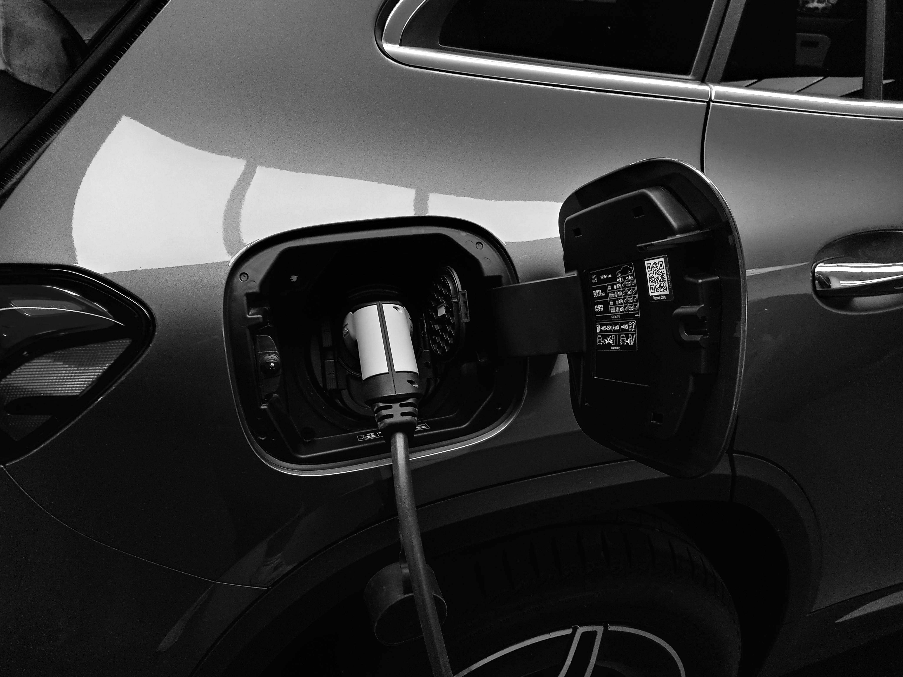

Las baterías son el corazón de cualquier coche eléctrico. Su duración, mantenimiento y coste de sustitución son algunos de los aspectos que más preocupan a los conductores. En este artículo analizamos cuántos años puede durar la batería de un coche eléctrico, qué factores influyen en su degradación y cómo puedes cuidarla para prolongar su vida útil.
La batería es el componente más importante y costoso de un vehículo eléctrico
¿Cuántos años dura la batería de un coche eléctrico?
En la mayoría de los modelos actuales, la batería de un coche eléctrico tiene una vida útil estimada entre 8 y 15 años, dependiendo del uso, la tecnología empleada y las condiciones ambientales. Las marcas suelen ofrecer garantías de 8 años o 160.000 km, asegurando que la batería conservará al menos el 70% de su capacidad original durante ese periodo.
En la práctica, muchas baterías superan con creces esa cifra si se utilizan correctamente. Los coches con baterías LFP (litio-ferrofosfato), como los de BYD o Tesla Model 3 RWD, suelen tener mayor durabilidad y resistencia térmica, aunque ofrecen algo menos de densidad energética que las NCM (níquel-cobalto-manganeso), más habituales en modelos europeos.
📊 Datos clave sobre la duración de baterías:
- Garantía típica: 8 años o 160.000 km
- Vida útil real: 10-15 años con buen mantenimiento
- Capacidad mínima al final: 70% de la original
- Mejor tecnología: LFP para mayor durabilidad
Cómo se mide la vida útil de una batería
El indicador más utilizado para medir el estado de una batería es el State of Health (SoH) o "estado de salud". Este parámetro refleja el porcentaje de capacidad que conserva la batería respecto a cuando era nueva.
Por ejemplo:
- Un SoH del 100% indica que la batería está como nueva
- Un SoH del 90% indica una degradación del 10%
- Un SoH del 70% está cerca del final de su vida útil
Los fabricantes suelen considerar que una batería está "en el final de su vida útil" cuando baja del 70–75% de su capacidad original. La degradación no es lineal. Los primeros años pueden presentar una pérdida de capacidad más rápida (3–5%), y luego estabilizarse a ritmos menores.
| Estado de salud (SoH) | Degradación | Estado de la batería |
|---|---|---|
| 90-100% | 0-10% | Excelente |
| 80-89% | 11-20% | Buena |
| 70-79% | 21-30% | Final de vida útil |
Factores que aceleran la degradación de la batería
La vida útil de una batería depende en gran medida del uso y los hábitos de carga. Algunos factores que aceleran su degradación son:
🔋 Cargar siempre al 100%
Mantener la batería al máximo nivel de carga durante largos periodos aumenta el estrés químico.
🌡️ Exposición al calor extremo
Las altas temperaturas son uno de los mayores enemigos del litio.
⚡ Uso frecuente de carga rápida (DC)
Genera más calor y reduce la vida útil si se usa constantemente.
❄️ Frío intenso
Reduce la eficiencia temporalmente y puede afectar a largo plazo sin gestión térmica adecuada.
Además, la conducción agresiva o la demanda energética alta también contribuyen a un desgaste más rápido de las celdas de la batería.
Consejos para alargar la vida de la batería
Afortunadamente, existen varios hábitos que ayudan a mantener la batería en buen estado durante más tiempo:

Una carga inteligente prolonga significativamente la vida útil de la batería
1. Mantén la carga entre el 20% y el 80%
Evita que la batería llegue a niveles extremos. La mayoría de fabricantes recomiendan este rango para el uso diario, reservando el 100% solo para viajes largos.
2. Evita temperaturas extremas
Siempre que sea posible, aparca en garaje o zonas sombreadas. En climas fríos, preacondiciona el coche antes de circular.
3. Utiliza carga lenta en casa
La carga doméstica (AC) es más suave y estable que la rápida en corriente continua. Ideal para el día a día.
4. Mantén el software actualizado
Los fabricantes lanzan actualizaciones que optimizan la gestión térmica y la carga. Mantener el sistema al día puede marcar la diferencia.
5. Conduce de forma eficiente
Una conducción suave, con regeneración de energía moderada y sin aceleraciones bruscas, reduce el desgaste interno.
💡 Consejos prácticos para el día a día:
- Carga por la noche con tarifa valle para reducir estrés térmico
- Usa la preacondición del habitáculo mientras está enchufado
- Evita dejar el coche al sol durante horas con batería llena
- Programa cargas al 80% para uso diario
Cuándo cambiar la batería de un coche eléctrico
Cambiar la batería completa no es algo habitual. En la mayoría de casos, las baterías duran más que el propio vehículo. Sin embargo, cuando llega el momento, hay opciones:
Reacondicionamiento
Sustituir solo los módulos dañados, reduciendo el coste total significativamente.
Sustitución completa
El precio puede oscilar entre 4.000 y 12.000 €, según la capacidad y el fabricante. Modelos como el Tesla Model 3 tienen baterías más caras debido a su tecnología avanzada.
Segunda vida
Las baterías retiradas aún pueden emplearse para almacenamiento estacionario o sistemas solares, extendiendo su utilidad más allá del vehículo.
Además, muchos fabricantes ofrecen programas de reemplazo o reacondicionamiento oficial con garantía extendida, lo que hace que el proceso sea más transparente y económico.
| Opción | Coste aproximado | Ventajas |
|---|---|---|
| Reacondicionamiento | 1.000-3.000 € | Económico, ecológico |
| Sustitución parcial | 2.000-5.000 € | Solo módulos dañados |
| Sustitución completa | 4.000-12.000 € | Como nueva, garantía |
Conclusión: una batería bien cuidada puede durar más de una década
La batería de un coche eléctrico no es un componente de "usar y tirar". Con una gestión adecuada y buenos hábitos de carga, puede ofrecer más de 10 años de vida útil y cientos de miles de kilómetros de autonomía real.
La clave está en evitar los extremos —ni carga total ni descarga profunda— y mantener el sistema térmico bajo control. Así, disfrutarás de tu coche eléctrico durante muchos años con un rendimiento prácticamente igual al del primer día.
🚀 En resumen:
- La batería dura entre 8-15 años con buen mantenimiento
- El SoH (State of Health) mide su estado real
- Evita temperaturas extremas y cargas al 100%
- Usa carga lenta y mantén el software actualizado
- El cambio de batería es cada vez más económico y sostenible
¿Tienes dudas sobre la batería de tu coche eléctrico? ¿Quieres saber cómo optimizar su duración en tu modelo específico? Escríbeme, estaré encantado de ayudarte con consejos personalizados basados en mi experiencia con diferentes vehículos eléctricos.
Preguntas frecuentes
FAQ – Duración de baterías de coches eléctricos
🔹 ¿Cuántos años dura realmente la batería de un coche eléctrico?
La batería de un coche eléctrico suele durar entre 8 y 15 años, dependiendo del uso y mantenimiento. Las garantías cubren generalmente 8 años o 160.000 km, conservando al menos el 70% de su capacidad original.
🔹 ¿Qué factores aceleran la degradación de la batería?
Los principales factores son: cargar siempre al 100%, exposición al calor extremo, uso frecuente de carga rápida DC, conducción agresiva y temperaturas muy frías sin gestión térmica adecuada.
🔹 ¿Cuál es la diferencia entre baterías LFP y NCM?
Las baterías LFP (litio-ferrofosfato) tienen mayor durabilidad y resistencia térmica, aunque ofrecen algo menos de densidad energética. Las NCM (níquel-cobalto-manganeso) son más habituales en modelos europeos y ofrecen mayor autonomía.
🔹 ¿Cuánto cuesta cambiar la batería de un coche eléctrico?
El precio varía entre 4.000 y 12.000 € para una sustitución completa, aunque el reacondicionamiento de módulos puede costar mucho menos (1.000-3.000 €). Muchos fabricantes ofrecen programas de reemplazo con garantía extendida.